Bin Builder Class¶
We’ll look at the question of filling in the Outcome objects
in each Bin container of
the Wheel collection. The Bin Builder Analysis section will address the
various outcomes in details.
In Bin Builder Algorithms we’ll look at eight algorithms for allocating appropriate outcomes to appropriate bins of the wheel.
The BinBuilder Design section will present the detailed design for this class. In Bin Builder Deliverables we’ll define the specific deliverables.
In Internationalization and Localization we’ll identify some considerations for providing local language names for the outcomes.
Bin Builder Analysis¶
Enumerating each Outcome in the 38 Bin instances
by hand is a tedious undertaking. Most Bin instances contain about
fourteen individual Outcome instances. An algorithm seems like
a better, less error-prone way to do this job.
It is often helpful to create a class that is used to build an instance of another class. This
is a design pattern sometimes called a Builder. We’ll
design an object that builds the various Bin instances and assigns
them to a Wheel object. This will fill the need left open in the
Wheel Class.
Additionally, we note that the complex algorithms to construct the Bin instances
are only tangential to the operation of the Wheel object.
Because these are not essential to the design of the Wheel class, we
find it helpful to segregate the builder methods into a separate class.
The BinBuilder class will have a method that enumerates the
contents of each of the 36 number Bin instances, building the individual
Outcome objects. We can then assign these Outcome
objects to the Bin instances of a Wheel instance. We
will use a number of steps to create the various types of Outcome instances,
and depend on the Wheel to assign each Outcome
object to the correct Bin.
The Roulette Outcomes¶
Looking at the Available Bets in Roulette gives us a number of
Outcome instances that
are combinations of individual numbers on the Roulette table.
These combinations apply to the numbers
from one to thirty-six. A different – and much simpler – set of rules
applies to 0 and 00.
First, we’ll survey the table geometry and the profusion of bets based on locations of the numbers. Then we’ll develop specific algorithms for each kind of bet.
Split Bets. Each numbered square on the layout is adjacent to two, three or four other numbers. There are horizontal (left-right( splits and vertical (up-down) splits. For example, “5” is part of “4-5”, “5-6”, “2-5”, and “5-8”. Around the edges of the layout, a number will be part of fewer splits.
Street Bets. Each number is a member of one of the twelve street bets. For example “9” is part of the “7-8-9” street.
Corner Bets. Each number is a member of one, two or four corner bets. A number in the center column (5, 8, 11, …, 32) is a member of four corners. For example, “8” is part of “5-6-8-9”, “4-5-7-8”, “7-8-11-12”, and “8-9-11-12”. At the edges, a number is part of fewer corners.
Line Bets. Six adjacent numbers comprise a line. A line is two adjacent street bets. Each number will be part of one or two lines. For example “9” is part of the “7-8-9-10-11-12” line as well as the “4-5-6-7-8-9” line.
Dozen Bets. Each number is a member of one of available dozen bets. The three ranges are from 1 to 12, 13 to 24 and 25 to 36, making it very easy to associate a numbers with one of the dozens.
Column Bets. Each number is a member of one of the three columns. Each of the columns has a number numeric relationship. The values are 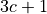, 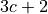, and 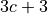, where 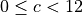.
The Even-Money or “Outside” Bets. These include Red, Black, Even, Odd, High, Low. Each number on the layout will be associated with three of the six possible even money
Outcomeinstances.The Five Bet. The
Bininstances for zero and double zero are special cases. Each of theseBininstances has a straight number betOutcome, plus the “Five Bet”Outcomeobject. This is a bet on (00-0-1-2-3, which pays 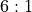).
One other thing we’ll probably want are handy names for the various kinds of odds. We might want to define a collection of constants for this.
While can define an Outcome as
Outcome("Number 1", 35) , this is a little opaque. A
slightly nicer form is Outcome("Number 1",
Game.StraightBet). Naming the odds makes it easier to
make a consistent change to the odds to represent some localized
change in house rules.
Bin Builder Algorithms¶
This section provides the algorithms for nine kinds of bets.
Note that we’re going to be accumulating sets (or lists) of individual
Outcome objects. These are interim objects that will be used
to create the final Bin objects which are assigned to the
Wheel.
We’ll be happiest using the core Python set structure to accumulate
these collections. The type hint will be Set[Outcome].
Generating Straight Bets¶
Straight bet Outcome instances are the easiest to generate.
Generating Split Bets¶
Split bet Outcome instances are more complex because of the various
edge and corner cases.
The table geometry has two kinds of split bets:
left-right split. These pairs all have the form 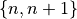.
up-down split. These pairs have the form 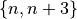 .
We can look at the number 5 as being part of 4 different pairs: 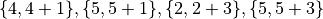. The corner number 1 is part of 2 split bets: 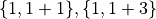.
We can generate all of the “left-right” split bets by iterating through the left two columns; the numbers 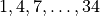 and 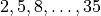.
For All Rows. For each row,
, in the range 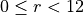:
First Column Number. Set 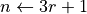. This will create values 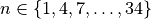.
Column 1-2 Split. Create a split
Outcomeobject with split bet odds of 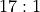.Assign to Bins. Associate this object with two
Bininstances:and 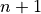.
Second Column Number. Set 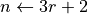. This will create values 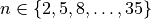.
Column 2-3 Split. Create a split
Outcomeobject.Assign to Bins. Associate this object to two
Bininstances:
A similar algorithm must be used for the numbers 1 through 33, to generate the “up-down”
split bets. For each number, , we generate a split bet.
This Outcome object belongs to two Bin instances: and 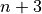.
Generating Street Bets¶
Street bet Outcome instances follow a very regular pattern.
We can generate the street bets by iterating through the twelve rows of the layout.
 .
.Generating Corner Bets¶
Corner bet Outcome instances are as complex as split bets because of
the various cases: corners, edges and down-the-middle.
Each corner has four numbers, 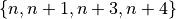. This is two numbers in the same row, and two numbers in the next higher row.
We can generate the corner bets by iterating
through the numbers 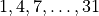 and 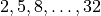. For each number,
, we generate a corner bet. This Outcome
object belongs to four Bin instances.
We generate corner bets by iterating through the various corners based on rows and columns. There is room for two corners within the three columns of the layout: one corner starts at column 1 and the other corner starts at column 2. There is room for 11 corners within the 12 rows of the layout.
For All Lines Between Rows. For each row,
First Column Number. Set . This will assure
.
Column 1-2 Corner. Create a corner
Outcomewith corner bet odds of 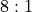.Assign to Bins. Associate this object to four
Bininstances:Second Column Number. Set . This will assure 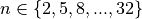.
Column 2-3 Corner. Create a corner
Outcomewith odds of .Assign to Bins. Associate this object to four
Bininstances:
Generating Line Bets¶
Line bet Outcome instances are similar to street bets. However,
these are based around the 11 lines between the 12 rows.
For lines  numbered 0 to 10, the numbers on the line bet
can be computed as follows: 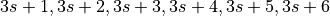. This
numbered 0 to 10, the numbers on the line bet
can be computed as follows: 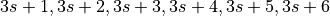. This Outcome
object belongs to six individual Bin instances.
Generating Dozen Bets¶
Dozen bet Outcome instances require enumerating all twelve numbers
in each of three groups.
 , in the range 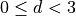:
, in the range 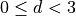: .
. , in the range 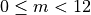:
, in the range 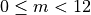:Generating Column Bets¶
Column bet Outcome instances require enumerating all twelve numbers
in each of three groups. While the outline of the algorithm is the same
as the dozen bets, the enumeration of the individual numbers in the
inner loop is slightly different.
 , in the range
, in the range  :
:Generating Even-Money Bets¶
The even money bet Outcome instances are relatively easy to generate.
Create the Red outcome, with odds of
.
Create the Black outcome, with odds of
Create the Even outcome, with odds of
Create the Odd outcome, with odds of
Create the High outcome, with odds of
Create the Low outcome, with odds of
For All Numbers. For each number,
Low? If 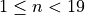, associate the Low
OutcomewithBinHigh? Otherwise, 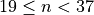, associate the High
OutcomewithBinEven? If
, associate the Even
OutcomewithBinOdd? Otherwise, 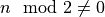, associate the Odd
OutcomewithBinRed? If 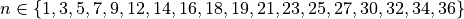, associate the Red
OutcomewithBinBlack? If it’s not Red, associate the Black
OutcomewithBinNote that zero and double-zero are not included in any of these.
BinBuilder Design¶
We’ll show the BinBuilder as a class definition.
It’s not perfectly clear that a class is necessary for this.
We could think of this is a collection of closely-related functions,
instead of a single class.
-
class
BinBuilder¶ BinBuildercreates theOutcomeinstances for all of the 38 individualBinon a Roulette wheel.
Constructors¶
-
BinBuilder.__init__(self) → None¶ Initializes the
BinBuilder.
Methods¶
-
BinBuilder.buildBins(self, wheel: Wheel) → None¶ Creates the
Outcomeinstances and uses theaddOutcome()method to place eachOutcomein the appropriateBinofwheel.It’s then the
Bininstances responsibility to update the data structure used to store theOutcomeinstances.
There should be separate methods to generate the straight bets, split bets, street bets, corner bets, line bets, dozen bets and column bets, even money bets, and the special five bet.
Bin Builder Deliverables¶
There are three deliverables for this exercise. The new classes should have meaningful Python docstrings.
The
BinBuilderclass. This is part of theroulette.pyfile.A class which performs a unit test of the
BinBuilderclass. The unit test invoke each of the various methods that createOutcomeinstances. There are a lot of potentialOutcomeinstances in variousBincollections. We don’t need to check them all, we’ll use the idea of boundaries to check selected cases.Test straight bet
Outcomeinstances in theBinobjects for positions 0, 00, 1, and 36 on theWheel.Test split bets at positions 1 and 36. There will be “1-2” and “1-4”
Outcomeobjects in theBininstance at position 1. Similarly, there will be “33-36” and “35-36”Outcomeobjects in theBininstance at position 36.Test street bets at positions 1 and 36.
Test corner bets around positions 1, 4, and 5. Since 1 is on the edge, it’s only part of one corner. 4, however, is part of two corners, and 5 will be part of 4 corner bets.
Test line bets to be sure that 1 is only in a single line bet, where 4 is part of two separate line bets.
Test dozens and columns by checking 1, 17, and 36 for membership in appropriate dozens and columns.
Use 1, 17, 18, and 36 to check low, high, red, black, even, and odd outside bets.
Finally. (Whew!) confirm that 0 and 00 participate in the five bet.
(Optional.) Extend the unit test of the
Wheelclass to create a more complex integration test. The test should create and initialize aWheel. It can use theWheel.getBin()method to check selectedBininstances for the correctOutcomeinstances.
Internationalization and Localization¶
An an advanced topic, we would like to avoid using a lot of string literals the names of the bets. Python offers extensive tools for localization (l10n) of programs. Since Python works with Unicode strings, it supports non-Latin characters, supporting internationalization (i18n), also.
This is an advanced topic. It’s tightly coupled with the names
provided to the Outcome instances. This is a place
to consider translating the labels for outcomes in the bins.